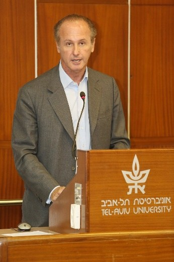
François Heilbronn, professeur à Sciences Po Paris, présenté par Sébastien Linden, attaché de coopération scientifique et universitaire auprès de l'ambassade de France, comme "un homme de multiple talents qui se bat en permanence pour les valeurs de la république française et s'exprime chaque fois qu'elles sont menacées", a consacré sa communication à la présentation de douze destins héroïques, six parachutistes juifs de la France libre et six autres d'espions israélites dans les services de renseignements alliés. Il l'a débuté en faisant entendre le chant de la prière des parachutistes, écrit par André Zirnheld, Juif d'origine alsacienne, aspirant du commando des forces spéciales de l'armée britannique (SAS), premier officier parachutiste de la France libre tombé sur le champ de bataille, en 1942 dans le désert de Cyrénaïque. Le texte de la prière a été retrouvé sur lui. Les cinq autres parachutistes étaient le commandant René-Georges Weill, capitaine de la première compagnie d'infanterie de l'armée de l'Air, tombé en captivité et décédé par suicide en mai 1942; Jean-Salomon Simon, commandant du 3 e régiment de chasseurs, parachuté en Belgique en avril 45 et mort au combat. Didier Heilbronn, oncle de François Heilbronn, volontaire dans le 1 er bataillon parachutiste de choc, blessé à la jambe. Maurice Rheims, membre de l'Académie française, commandant en second du premier groupe de commandos parachutistes en Algérie. Norbert Beyrard (Benchemoul), parachuté au Pays-Bas, fait prisonnier et évadé. Sur 400 parachutistes, près de 100 étaient juifs, dont 15 officiers.
La deuxième partie de l'intervention était un hommage aux espions et saboteurs juifs des services secrets alliés. Jean Rosenthal, du Bureau central de renseignement et d'action de la France libre (BCRA), héros de La Vallée des rubis de Joseph Kessel; le lieutenant Bernard Bermond (Benjamin Benezra), du Bureau des services stratégiques des Etats-Unis (OSS), le commandant François Klotz, du SPOC américain, torturé à plusieurs reprises et disparu en juillet 44, grand-oncle de François Heilbronn à l'origine de son prénom et de son désir de servir dans le régiment des parachutistes. Jean Worms, agent secret français du SOE britannique, arrêté, torturé et exécuté à Flossenburg en 1945. Philippe Koenigswerther du BCRA, exécuté en Alsace au camp de Stuttoff. Denise Bloch du SOE, parachutée en France en 1942, torturée et abattue par la Gestapo en janvier 1945. Enfin Nahum Ben Shemoul, qui s'enrôla comme volontaire étranger vers la Palestine, et sera à l'origine de la première unité de parachutistes de l'armée israélienne. Le Prof. Heilbronn estime la participation des Juifs de France à plus de 10% de l'ensemble des services secrets alliés, alors qu'ils ne représentaient que 1% de l'ensemble de la population française.
Par François Heilbronn
27 juillet 2017
La France libre, le fameux régime de résistance extérieure fondé à Londres par le général de Gaulle à la suite de son appel du 18 juin 1940, comptait de nombreux combattants juifs. Leur histoire est assez méconnue.
Il y a 75 ans, le 27 juillet 1942, l’Aspirant André Zirnheld a été le premier officier parachutiste français libre à avoir été tué par l’ennemi dans le désert Libyen. Il ouvre une série de douze destins héroïques de parachutistes juifs de la France Libre.
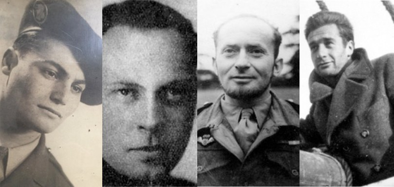
La « Prière du parachutiste », le chant fétiche de tous les régiments parachutistes français, fut retrouvée en Cyrénaïque, le 27 juillet 1942, dans la poche du premier officier parachutiste de la France Libre, tué au combat, l’Aspirant André Zirnheld. Ce parachutiste français libre était d’origine juive alsacienne.
De Gaulle, en rendant hommage à tous les parachutistes de la France Libre, écrivit: « Pour les parachutistes, la guerre fut le danger, l’audace, l’isolement. Entre tous, les plus exposés, les plus audacieux, les plus solitaires ont été ceux de la France Libre » [1].
Combien étaient-ils, ces héros des troupes d’élite de la France Libre, à être d’origine juive?
En parcourant les cahiers de marche de ces régiments illustres (le Bataillon de choc, le French Squadron des Special Air Service, les fameux SAS, les 3 ème et 4 ème SAS, la 1 ère Compagnie de l’Air, les Commandos de France, les 1 er, 2 ème, 3 ème Régiments de Chasseurs Parachutistes), les noms d’origine juive sont nombreux parmi les officiers, les sous-officiers et les simples soldats, dénommés « chasseurs ».
Et aussi, en parcourant les listes des réseaux de renseignement et d’actions des services secrets anglais, américains et français, nombreux également étaient les Français juifs.
J’ai ainsi choisi d’évoquer, lors d’un colloque à l’université de Tel-Aviv sur « Les combattants juifs de la seconde guerre mondiale [2] » quelques figures historiques et représentatives de ces parachutistes juifs de la France Libre.
Ils furent pour la plupart des officiers aux avant-postes des premières unités parachutistes, d’autres des simples soldats, mais aussi des espions, des saboteurs et des chefs de maquis. Beaucoup d’hommes, mais aussi quelques femmes.
Voici donc l’histoire de douze destins héroïques de parachutistes juifs de la France Libre.
J’évoquerai tout d’abord les guerres de six officiers et soldats des unités parachutistes.
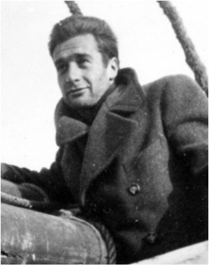
Le premier d’entre eux, André Zirnheld [3], l’auteur de la « Prière des parachutistes », est né en 1913 à Paris dans une famille juive alsacienne patriote qui a choisi la France en 1870. Orphelin de père à 9 ans, il suit des études de philosophie, se spécialisant en Spinoza. Il devient professeur de philosophie au collège de Sousse en Tunisie, puis au lycée Carnot de Tunis. Professeur également en Syrie en 1940, il rejoint les Britanniques en Palestine et s’engage dans l’Infanterie Coloniale. Il sert en Egypte puis en Libye où il rencontre en janvier 1941 « les rats du désert ».
Il suit l’école d’officiers à Brazzaville. Sorti 5 ème, il demande à servir dans les parachutistes de la France Libre, le « French Squadron » intégré au « Special Air Service Brigade » britannique, les fameux SAS du major Stirling.
Le rôle de ces « rats du désert » était d’attaquer en profondeur et de saboter les terrains d’aviation et les avions allemands en Libye. Zirnheld, à la tête de son commando, détruit ainsi 5 Messerschmitt 109 sur un terrain de Benghazi.
De retour d’une opération le 26 juillet 1942, sa Jeep crève, il est mitraillé par des Stuka. Blessé mortellement, il meurt le lendemain matin dans le désert de Cyrénaïque.
L’aspirant Martin, qui l’accompagnait, l’enterra et trouva sur lui cette « Prière du para » écrite de manière prémonitoire à Tunis en 1938.
André Zirnheld, dont son commandant, le Capitaine Jordan, disait qu’« Il a été l’un des plus aimé et admiré » [4], fut le premier officier parachutiste de la France Libre tué par l’ennemi. David Stirling, le légendaire patron des premiers parachutistes anglais, les Special Air Service, les SAS, l’avait lui surnommé « le good Frenchie » 4.
Il fut nommé Compagnon de la libération − l’Ordre de la Libération institué par de Gaulle reconnaîtra ainsi 1.038 hommes et femmes « qui se seront illustrés dans l’œuvre de libération de la France et de son Empire ». Vingt-sept, parmi ces Compagnons héroïques appartenaient à des unités parachutistes et trois parmi eux étaient juifs: André Zirnheld, que nous venons d’évoquer, mais aussi René-Georges Weill et Jean-Salomon Simon.
Le 25 décembre 1940, les premiers parachutistes de la France Libre reçoivent le brevet de parachutiste britannique. Ils sont 2 officiers, 4 sous-officiers et 19 soldats.
Les deux officiers sont le Capitaine Bergé et le Lieutenant René-Georges Weill.
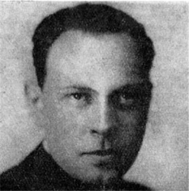
René-Georges Weill [5] est né en 1908 à Montpellier dans une famille d’origine juive lorraine. Avocat brillant, il est reçu 1 er au concours d’avocat et devient secrétaire de la conférence du stage. Officier d’infanterie de réserve, il se bat courageusement pendant la Campagne de France et reçoit la Croix de Guerre le 9 juin.
Le 21 juin, n’acceptant pas la défaite, il s’embarque de Sète pour Londres. Officier en second de la première unité parachutiste de la France Libre, il en prend le commandement en janvier 1941. Blessé gravement lors d’un saut d’entraînement, il rejoint les services secrets français, le BCRA, puis, en mars 1942, l’état-major de de Gaulle.
Malgré ses blessures, il veut reprendre le combat. Il est parachuté en région parisienne le 28 mai 1942 comme chef de la mission « Goldfish » pour être l’officier de liaison des groupes communistes avec la France Libre.
Son sous-officier ayant parlé sous la torture après avoir été arrêté, il tombe dans un guet-apens de la Gestapo. Il avale sa pilule de cyanure et se donne ainsi la mort, pour ne pas parler.
René-Georges Weill fut nommé Compagnon de la Libération, chevalier de la Légion d’honneur, Croix de Guerre et Médaille de la résistance.
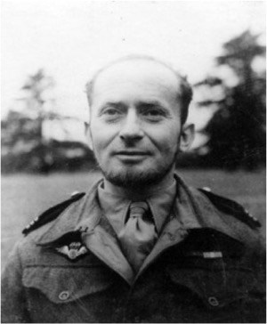
Le 3 ème et non moins héroïque Compagnon de la Libération, parachutiste et juif, fut Jean-Salomon Simon [6].
Chaque semaine comme professeur à Sciences Po, je passe devant une plaque qui porte son nom. Je la lis. Cette plaque qui se trouve dans l’entrée du 27 rue Saint-Guillaume honore les anciens élèves morts au champ d’honneur pour la France.
Jean-Salomon Simon est né en 1908 à Paris, diplômé de Sciences Po, il est ancien élève et officier de réserve de Saint Cyr. Il est administrateur civil en Indochine et sert dans l’Infanterie Coloniale.
Début 41, il s’évade d’Indochine pour rejoindre les FFL à Shanghai. Il rejoint les bataillons de marche du Levant et se bat en Libye et en Somalie. Il rejoint les SAS en Angleterre en juin 1943. Son unité devient le 3 ème Régiment de Chasseurs Parachutistes.
Jean-Salomon Simon est parachuté dans la nuit du 2 au 3 août 1944 en Vienne comme commandant du groupe « Moses » et se bat pendant deux mois derrière les lignes ennemies sur l’axe Montauban-Brive-Limoges, détruisant et harcelant convois et détachements allemands. Chargé de retarder la retraite allemande de l’Ouest, il fait sauter avec son détachement, le 29 août, le pont de Lésigny et canalise les colonnes ennemies sur une seule route.
Le 1er septembre, en reconnaissance à Lésigny en jeep avec quatre autres officiers, il attaque et prend un camion allemand avec un matériel très important et tue 27 ennemis.
Il renseigne également le commandement allié, permettant de faire subir à l’ennemi des bombardements aériens tellement sévères que le général allemand Elster se rend aux Américains, à Issoudun, le 10 septembre 1944, avec 19 000 hommes. Le capitaine Simon est présent lors de la reddition.
Après la libération de la région, les SAS retournent en Grande-Bretagne en attendant leur prochaine mission. Nommé commandant en décembre 1944, Jean-Salomon Simon participe ensuite à la campagne de libération de la Hollande.
Avec deux Régiments Français, deux Régiments Anglais et un Bataillon Belge, ils feront partie de l’opération Amherst. Près de 700 parachutistes français seront parachutés en Hollande au-delà des lignes d’avancée du 2 ème corps Canadien.
Dans la nuit du 7 au 8 avril 1945, dans la région de Drenthe, le Commandant Simon est parachuté avec un groupe de sept hommes avec lesquels il exécute diverses missions de sabotage et d’embuscade.
Le 11 avril à Hoogeveen, il trouve une mort glorieuse en s’opposant avec acharnement à une contre-attaque alors que son tireur au fusil-mitrailleur, seul avec lui, vient d’être tué à ses côtés. Il est inhumé à Hoogeveen.
Le Chef du 3 ème RCP, le Commandant Pierre Château-Jobert, a évoqué dans ses mémoires les origines juives de son courageux adjoint, il écrit: « Le Capitaine Simon devint mon précieux adjoint. A aucun moment je n’eus à regretter d’avoir fait leur place aux Israélites. Ils ont combattu et se sont fait tuer comme les autres » [7].
Mais, au-delà du brillant parcours de ces héroïques officiers parachutistes juifs, je voudrai maintenant évoquer la guerre de trois jeunes chasseurs parachutistes.
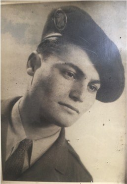
Tout d’abord celle de mon oncle, Didier Heilbronn. Didier est né le 12 décembre 1926, il s’évada de France en avril 1944, à l’âge de 17 ans, en traversant les Pyrénées. Emprisonné en Espagne, puis libéré, il s’embarque en juin de Malaga pour Alger. Là, il s’engage à 17 ans et demi au Bataillon de Choc au camp de Staouéli.
Le Bataillon de Choc, unité de Commandos Parachutistes, sera de tous les plus durs combats: de libération de la Corse, de l’Ile d’Elbe, de la rade de Toulon, des batailles des Vosges, d’Alsace et d’Allemagne.
Le Général de Lattre dira de lui: « Le Bataillon de Choc s’est vu confier les missions les plus dures. Il n’a pas connu d’échec » [8].
Mon oncle, après son entraînement, quitta Alger le 12 novembre 1944 pour rejoindre ses camarades parachutistes lors des terribles combats des Vosges et d’Alsace. Il respecta toujours leur devise « En pointe toujours ». A tout juste 18 ans, il se vit décerner la Croix de Guerre avec deux citations. La première, le 12 février 1945, avec la citation suivante: « Chasseur d’un grand sang-froid, très calme, qui a brillamment participé à la prise d’une position ennemie lors de l’attaque du village de Dureenentzen dans le Haut-Rhin le 1 er février 1945 ».
La seconde, après l’attaque en Allemagne d’un poste ennemi, avec la citation suivante: « Le 5 avril 1945, à l’attaque de Durrenhuchig, a audacieusement participé à l’assaut d’une pièce anti-char. A permis par son action, la capture et la neutralisation des servants de la pièce ».
Il fut blessé une semaine plus tard, le 12 avril 1945 en Forêt Noire. On peut lire dans le journal de marche du Bataillon de Choc: « La Section de Commandement, près de Kaltenbronn. Ces 2 ème et 4 ème Sections subissent au carrefour 892 un violent tir d’artillerie qui inflige les pertes suivantes: Blessés: Chasseurs Heilbronn et Charlot, Caporal Orsini » [9].
Didier Heilbronn se remettra de sa blessure, un éclat d’obus lui avait déchiré la jambe.
Et mon oncle si modeste, comme le sont les héros, n’évoquait jamais sa guerre, sauf, parfois, avec deux de ses très proches amis.
Avec Maurice Rheims, membre de l’Académie Française. Officier de réserve, il créa à Alger, avec Henri d’Astier de la Vigerie, « Les Commandos de France », une unité de commandos parachutistes qui devint le 3 ème Bataillon de Choc. Le Commandant Maurice Rheims commandera en second ce glorieux Bataillon dans les combats meurtriers des Vosges et d’Alsace non loin du Bataillon de mon oncle. Maurice Rheims, était d’origine juive lorraine et son père, héros de Verdun, fut général.
L’autre ami de Didier Heilbronn, avec qui il évoquait parfois ces combats terribles de l’hiver 44-45, était Roland Sadoun.
Roland Sadoun, était un officier des services secrets de la France Libre, le BCRA, ayant participé au débarquement de Normandie et s’étant illustré dans des opérations de renseignement derrière les lignes ennemies.
Mon oncle ne me parla qu’une fois de sa guerre. Ce fut lorsqu’à mon tour, j’obtins mon brevet de parachutiste militaire et servis comme officier au 9 ème Régiment de Chasseurs Parachutistes. A cette occasion, il me remit l’écusson de son béret.
Revenons au Bataillon de Choc.
En examinant la liste des officiers pendant les opérations d’Allemagne d’Autriche [10], nous lisons les noms suivants:
Aspirant Blum, Sous-Lieutenant Attali, Aspirant Benichou, Aspirant Lamsfuss, Lieutenant Touboul, Lieutenant Isaac.
Soit 6 officiers juifs sur 48, ou 1 sur 8, là où les juifs ne représentaient que 1% de la population française.
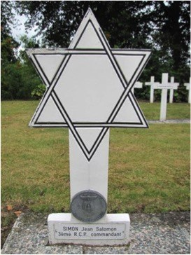
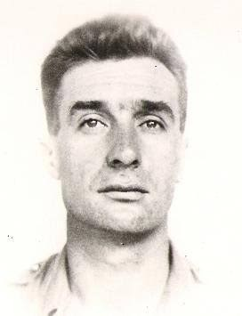
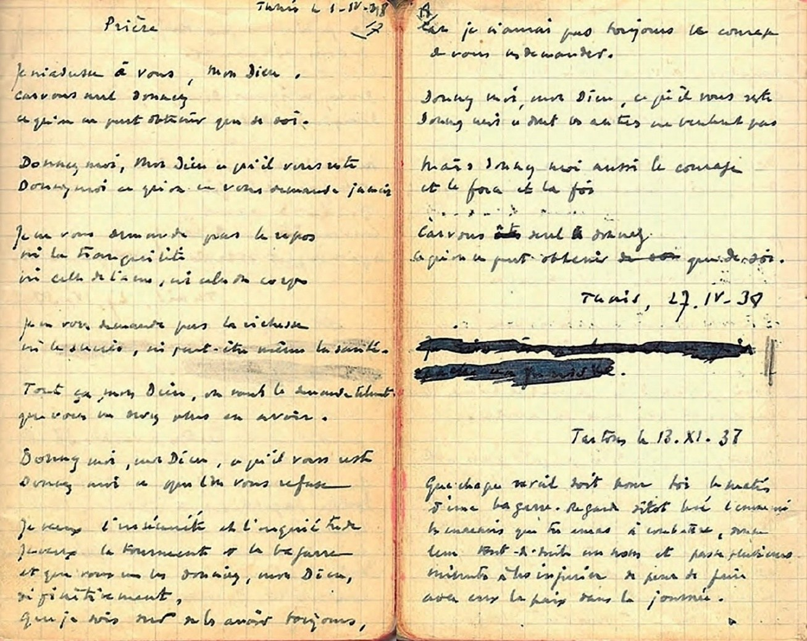
« Il était de la taille des Estienne d’Orves, des Saint-Exupéry, des Marienne », disait le général Bergé d’André Zirnheld, mort au champ d’honneur à 29 ans, le 27 juillet 1942, en pleine guerre des sables.
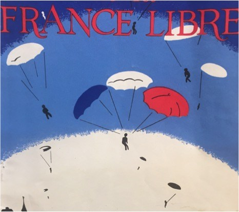
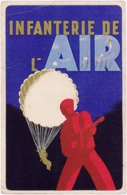
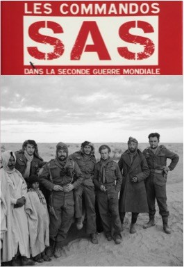
[1] Revue de la France Libre, numéro spécial, Parachutistes SAS de la France Libre, juin 1953.
[2] Référence: Honorer les héros juifs – « Les Combattants juifs de la Seconde guerre mondiale » à l’Université de Tel-Aviv.
[3] Source: Site du Musée de l’Ordre de La libération: André Zirnheld.
[4] Source: Christophe Prime, Les commandos SAS dans la Seconde Guerre mondiale, Editions Tallandier.
[5] Source: Site du Musée de l’Ordre de La libération: René Georges Weill.
[6] Source: Site du Musée de l’Ordre de La libération: Jean Salomon Simon.
[7] Source: Pierre Château-Jobert, Feux et lumières sur ma trace: faits de guerre et de paix, Presses de la Cité.
[8] Source: Bataillon de Choc en action, rapport des Officiers et Chasseurs du Bataillon, 1961.
[9] Source: Le Bataillon de Choc en action, de Staouéli à l’Arlberg, Editions Gilbert, 1947.
[10] Source: Raymond Muelle, Le 1 er Bataillon de choc, Presses de la Cité.
La France libre, le fameux régime de résistance extérieure fondé à Londres par le Général de Gaulle à la suite de son appel du 18 juin 1940, comptait de nombreux combattants juifs. Leur histoire est assez méconnue.
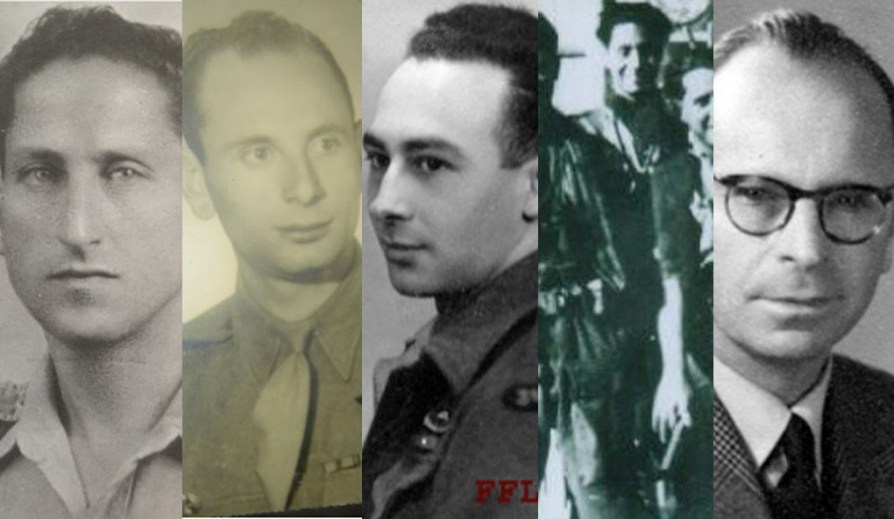
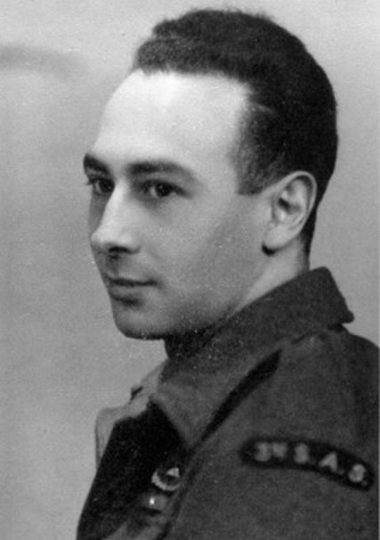
Jacques Cahen [1] est né à Metz en Lorraine en 1922. Pendant la guerre, il est étudiant en école de commerce à Toulouse et participe à la résistance toulousaine par la diffusion de tracts et la pratique de sabotages. Après l’invasion de la zone libre, il passe les Pyrénées pour l’Espagne où il est emprisonné.
Il ne sortira du camp de Miranda que six mois plus tard. Arrivé à Casablanca, il s’engage aux Corps Francs d’Afrique. Il se bat en Tripolitaine. Puis, d’Egypte, il s’engage dans les paras et rejoint l’Angleterre où il effectue sa formation à Ringway. Il est parachuté pour soutenir des maquis en Saône et Loire en août 44. En février 45, il retourne en Angleterre et est muté dans les SAS qui préparent l’invasion de la Hollande.
C’est lors de cette opération que décèdera aussi le Commandant Simon déjà évoqué.
Jacques Cahen est très grièvement blessé, au même titre que sept des onze parachutistes de son « stick » (sa section de combat) lors d’un encerclement de leur position par les Allemands, quand ils refusèrent de se rendre.
Il a été fait prisonnier en Allemagne jusqu’à la fin de la guerre. Croix de Guerre, Médaille Militaire et Croix de Bronze hollandaise, Jacques Cahen décède à 41 ans des suites de ses blessures.
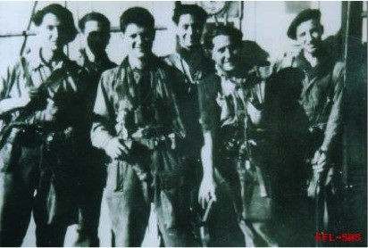
Le Stick Zermati: Adrien Sebag, Robert Barkatz, D. Plowright, Norbert Benchemoul (Beyrard), Dominique Franchisci, Roland Lombardo. (Hors champs: Sous-Lieutenant Rémi Dreyfus, Lieutenant Jacques Zermati).
Le dernier chasseur parachutiste à qui je rends hommage et qui finira la guerre avec le grade d’officier, comme Aspirant, est Norbert Beyrard de son vrai nom Norbert Benchemoul [2].
Il est né en 1925 à Palikao en Algérie. Il rejoint les FFL à 18 ans en 1943 et est envoyé à Ringway en Angleterre pour être formé comme parachutiste. Il est affecté au 3ème SAS et est parachuté en Bourgogne en juillet 1944 pour participer à des dizaines d’opérations de sabotage. Son « stick » porte le nom de son Lieutenant: le « Stick Zermati » – l’adjoint étant le sous-lieutenant Rémi Dreyfus. La plupart des membres de son commando sont juifs (Sebag, Barkatz, Lombardo, Beyrard).
Ils s’illustreront glorieusement dans la bataille de Sennecey-le-Grand – celle où une vingtaine de SAS soutenus par le maquis de Corlay blessent ou tuent près de 1.000 soldats allemands en attaquant la garnison sur des jeeps armées de mitrailleuses. Sur les vingt paras engagés ce jour-là, onze périssent.
Six d’entre eux étaient juifs et Norbert Beyrard récitera le Kaddish pour eux: l’Aspirant Lyon-Caen, l’Adjudant Benhamou, les deux frères Djian, les parachutistes Barkatz et Lombardo. Cette action commando permettra la libération de Châlons-sur-Saône et fut tellement emblématique que c’est à Sennecey-le-Grand que fut érigé, après-guerre, le Mémorial des SAS tués lors des combats pour la libération de la France.
Beyrard, comme les autres SAS, est ensuite renvoyé en Angleterre pour être parachuté en avril 45 aux Pays-Bas. Nommé officier, il doit, avec son stick, fixer les Allemands dans la ville d’Orange. Ils se battent à 20 contre une centaine de paras allemands. Il est grièvement blessé et fait prisonnier mais s’évade quelques semaines plus tard et retrouve les SAS. Il reçoit la Légion d’honneur, la Médaille Militaire et la Croix de bronze hollandaise et reprend ses études d’ingénieur. Après-guerre, Beyrard déclara « Dans mon Bataillon du 3ème SAS, sur 400 parachutistes, près de 100 étaient juifs et 15 étaient officiers » [3].
Mais au-delà de ces parcours de français juifs ayant servi dans les unités parachutistes de la France Libre, je souhaite évoquer six autres itinéraires de parachutistes français et juifs, celui des espions et des saboteurs des services secrets alliés.
J’ai choisi de relater le destin héroïque de cinq hommes et une femme, tous officiers des services actions des services secrets anglais, français ou américains, tous français, juifs et tous brevetés parachutiste.
Ils combattirent pour les différents services d’espionnage et de sabotage des forces alliées. Le Bureau Central de Renseignement et d’Action, le BCRA, le service secret de la France Libre. Le Special Operation Executive, le SOE, unité spéciale des services anglais, créée par Churchill pour toute l’Europe avec pour seule instruction: « And now, set Europe ablaze ». Chaque pays disposait d’une branche, celle qui nous intéresse est la French Section, F Section, plus connue sous le nom de « Réseaux Buckmaster ». Enfin, l’Office of Strategic Services, l’OSS des Américains, ancêtre de la CIA. Les missions étaient aussi parfois coordonnées entre les différents services, ainsi fut créé à Alger le SPOC (Special Project Operations Center) pour coordonner les actions du BCRA, du SOE et de l’OSS pour préparer le débarquement de Provence.
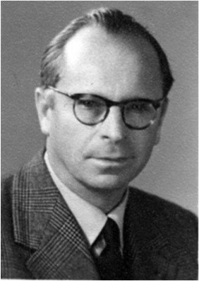
Commençons notre évocation, par un Compagnon de la Libération et un des plus décorés, Jean Rosenthal [4].
Jean Rosenthal est né en 1906 à Paris. Il rejoint Leclerc en 1942, comme Lieutenant de chars. En septembre 1943, il est incorporé au BCRA et envoyé avec un officier anglais du SOE inspecter les maquis de Savoie. Revenu à Londres pour rendre compte directement à de Gaulle, il est à nouveau déposé dans le Jura comme délégué de la France Combattante en Haute-Saône.
Il participe aux missions des Glières et sabote les usines d’Annecy. Il organise en février 44, plusieurs parachutages sur le maquis des Glières. Il participe à la défense du Plateau des Glières. Le légendaire Tom Morel est abattu non loin de lui.
Il retourne à Londres en mai 1944 pour être ensuite parachuté en juin 44 à Cluny. En août 1944, il commande les maquisards de Haute-Savoie et reçoit la capitulation des forces allemandes commandées par le Général Oberg.
Et c’est sur le lieu même de ces combats que de Gaulle lui remet la Croix de la Libération.
Il se bat ensuite en Extrême-Orient contre les Japonais comme commandant d’unité parachutiste. Jean Rosenthal, colonel de réserve, fut fait Grand-Croix de la Légion d’honneur. Il fut aussi l’ami et le héros d’un roman de Kessel, « La vallée des rubis ». Voici comment Kessel traçait son portrait dans ce superbe roman: « Il n’entre pas, il charge. Il ne marche pas, il court. Il ne parle pas il a la fièvre. Aucun des sentiments n’est banal, stable ou modéré. Il s’exalte, il s’enflamme, il brûle. C’est ainsi que pendant la guerre, parachuté ou déposé par avion, il allait et venait entre Londres et la France, animait les maquis de Savoie, réussissait les missions les plus désespérées dans une sorte de frénésie épique, inconsciente et joyeuse » [5].
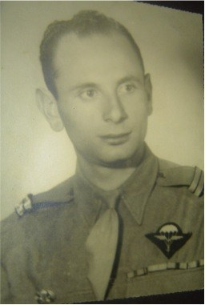
Le deuxième, le Lieutenant Bernard Bermond [6] fut un de mes amis. Né en 1921, il s’engage dans la résistance au Havre en 1941. Il rejoint Marseille et se joint aux réseaux Corses. Arrêté en Corse pour faits de résistance, il participera ensuite à la libération de l’île. Il rejoint après cela Alger où il est détaché par l’armée française auprès des services secrets américains, l’OSS. Il débarque en décembre 1943 en sous-marin près de Ramatuelle et a pour mission, avec son réseau, de fournir les plans de défenses des Côtes de Provence.
Une fois les informations recueillies, il gagne l’Espagne où il est arrêté avant de s’évader et rejoindre Alger en mars 1944. A Alger, il peut enfin remettre les micro-films des plans de défenses côtières allemandes. Il est ensuite parachuté près de Marseille le 24 mai 1944. Arrêté par la Gestapo, le 12 juin, dans un piège tendu par un milicien, Paul Pavia, il arrive à s’évader des geôles de la rue Paradis et à faire tomber après-guerre les traîtres responsables de son arrestation. Grâce, entre autres, à ses renseignements, le débarquement de Provence du 15 août 1944 est un succès. Après-guerre, il rejoint la branche action des services secrets français. Il fut fait Commandeur dans l’Ordre de la Légion d’Honneur. Bernard Bermond, de son vrai nom Benjamin Benezra, était né le 3 mars 1921 à Istanbul dans une famille juive turque.
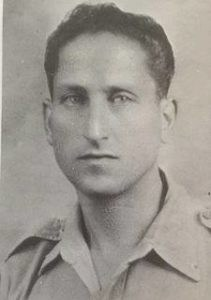
Evoquons maintenant un autre officier parachuté pour diriger un réseau de saboteurs FTP à Marseille. Le lieutenant François Klotz.
François Klotz [7], est né en 1908 à Garches (Seine). Il est le fils de Henry Klotz, lieutenant-colonel de réserve et officier de la Légion d’honneur à titre militaire, et de Flore Hayem. Sa famille, d’origine juive lorraine, est parisienne depuis 1731. Industriel parfumeur à Paris, il est mobilisé au 193 e régiment d’artillerie en 1939-1940. Il rejoint le Maroc en 1941 et appartient, là, au groupe de résistants du réseau Schuman-Mengin.
Lors de la préparation du débarquement allié au Maroc, il est arrêté à Marrakech avec un membre de son réseau, Albert El Khouby, par la police de Vichy et emprisonné à Casablanca en juin 1942. Torturé maintes fois, battu, comme Juif, il y reste six mois.
Libéré à l’issue du débarquement américain, il rejoint les Forces Françaises Libres, aux Commandos d’Afrique, en décembre 1942. Il prend alors part aux combats de Tunisie, où il est blessé et décoré de la Croix de Guerre. Parlant parfaitement anglais, il est détaché par les FFL en février 44 auprès du SPOC (Special Project Operations Center, l’unité alliée issue de l’OSS, du SOE et du BCRA) à Alger, au sein de la sous-section française dirigée par le Commandant anglais, Brooks Richards. Le SPOC était responsable de la liaison et de l’alimentation, par air et par mer, en armes et en officiers et sous-officiers des maquis du sud-est de la France.
Le lieutenant François Klotz (alias François Kerret, alias « Edgar ») a été parachuté seul, dans la nuit du 28 au 29 juin 1944, dans l’Hérault pour prendre la direction du réseau de résistance SOE « Monk » de Marseille, en vue de la préparation du débarquement de Provence.
Ce réseau Monk du SOE avait été créé par le Capitaine anglais, Charles Skeper alias « Bernard » dans la région de Marseille en juin 1943. Il avait notamment organisé les attaques du tunnel de Cassis et le déraillement de Saint-Maximin, avec l’aide des FTP d’Aix.
« Bernard » fut arrêté par la Gestapo de Marseille en mars 1944. Il est mort en déportation au même titre que ses deux adjoints, le Capitaine Arthur Steele, son opérateur radio et le lieutenant Eliane Plewman, son agent de liaison. François Klotz fut parachuté pour remplacer « Bernard », avec 25 « containers » d’armes, et pour être réceptionné par l’opérateur radio du réseau Monk.
Hélas! Cet opérateur, le lieutenant Steele, avait craqué sous la torture et avait émis des messages vers Alger sous le contrôle du contre-espionnage allemand et de la milice française.
François Klotz fut certainement réceptionné, par des miliciens français se faisant passer pour des résistants, dont Paul Pavia, un des chefs de la milice de Marseille, le même qui arrêta Bernard Bermond. Conduit à la Gestapo de Marseille, rue Paradis, François Klotz a soit avalé sa pilule de cyanure, soit est mort sous la torture soit a été fusillé au charnier de Signes, avec d’autres chefs de la résistance provençale et des officiers alliés, le 18 juillet 1944. Ce même mois de juillet 44, son père Henry, deux de ses sœurs, Lucienne et Denise, et sept autres membres de sa famille étaient arrêtés à Paris comme juifs pour être déportés à Auschwitz-Birkenau. Aucun d’eux ne revint.
François Klotz se vit attribuer à titre posthume la « Silver Star Medal » (une des plus hautes décorations militaires américaines), la Médaille Militaire et la Croix de Guerre 1939-1945.
François Klotz était mon grand-oncle, mais il est aussi à l’origine du prénom que je porte et du fait que je choisis de servir comme Lieutenant de réserve parachutiste de l’armée française.
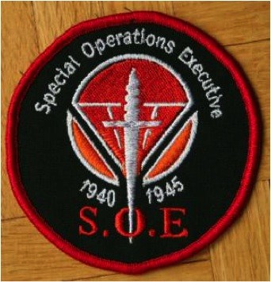
[1] Dossier militaire de Jacques Cahen transmis par son fils François Cahen.
[2] Sources:
Colonel Roger Flamand, Paras de la France Libre, Presses de la Cité.
La guerre d’indépendance d’Israël, 1948-1949, Témoignages des volontaires français, édition MAHAL.
[3] Source: La guerre d’indépendance d’Israël, 1948-1949, Témoignages des volontaires français, édition MAHAL.
[4] Source: Musée de l’Ordre de la Libération.
[5] Joseph Kessel, La vallée des rubis, p.2, Folio.
[6] Sources:
Fabrizio Calvi, OSS, la guerre secrète en France, Nouveau Monde Editions.
Guillaume Vieira, La répression de la Résistance par les Allemands à Marseille et dans sa région (1942-1944), Aix-en- Provence, thèse d’histoire, Université d’Aix-Marseille, 2013.
[7] Sources: Archives nationales britanniques, SOE série HS 39.
Archives nationales de Etats-Unis, OSS, dossier Mercenary/Klotz.
Central Archives for the History of the Jewish People, Jérusalem, Dossier KF opération Mercenary, état de service. Guillaume Vieira, La répression de la Résistance par les Allemands à Marseille et dans sa région (1942-1944), Aix-en-Provence, thèse d’histoire, Université d’Aix-Marseille, 2013.
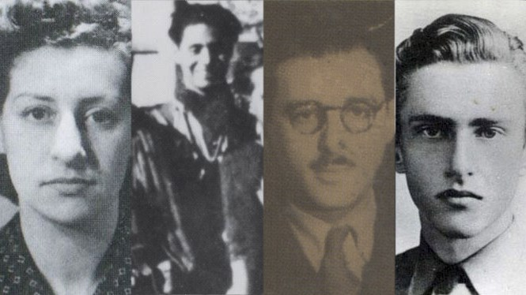
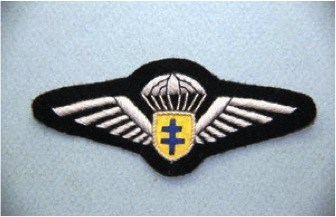
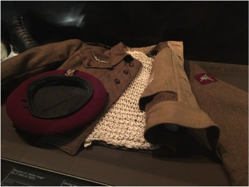
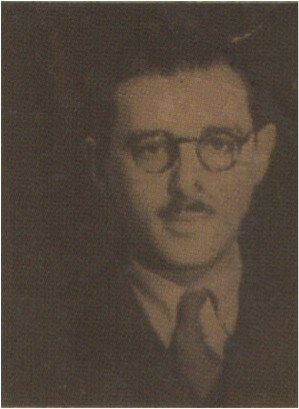
Reprenons l’évocation des guerres de ces espions et saboteurs parachutistes Français Libres d’origine juive. Le Lieutenant Jean Worms [1], fut un agent du service secret britannique Special Operations Executive (SOE). Sous le nom de guerre de « Robin », il fut le chef du réseau JUGGLER, qui opérait dans la région de Châlons- sur-Marne.
Né en 1909 à Paris, il est le frère d’un autre grand résistant, Roger Worms, plus connu comme journaliste et écrivain sous le nom de Roger Stéphane, un des fondateurs de l’Observateur.
En septembre 1940, à une époque où la Résistance en est encore à ses balbutiements, il participe à différents réseaux de renseignements à Paris. En 1942 il rencontre Virginia Hall, Francis Basin et Peter Churchill, responsables des Services actions britanniques en France. En octobre 1942, il se rend en Angleterre par felouque où il suit la formation d’agent SOE.
Le 22 janvier 1943. Il est parachuté près de Chartres, en même temps qu’Henri Déricourt, « Gilbert », qui vient pour une autre mission. Sous le nom de guerre de « Robin », il doit établir un réseau nommé JUGGLER, exclusivement composé de Juifs, qui animera des groupes de sabotage dans la région de Châlons-sur-Marne. Il est réceptionné par Francis Suttill et Andrée Borrel, accompagnés de Jacques Weil, un de ses amis de longue date qui devient son adjoint. La direction du réseau est complétée par Sonia Olschanesky, « Tania », la fiancée de Jacques Weil, d’origine juive russe et née en Allemagne qui devient son courrier et, plus tard, par Gaston Cohen, alias « Justin », comme opérateur radio.
Son réseau organisera de nombreuses actions de sabotage, de renseignements et de réceptions de parachutage – et notamment des sabotages de voies ferrées à Melun.
Le 1 er juillet 1943, il est arrêté au restaurant Chez Tutulle, au 8 rue Troyon à Paris, alors qu’il déjeune avec Armel Guerne. Jacques Weil, qui avait rendez-vous avec lui à 15 h pour discuter du projet de sabotage au jour J de la centrale téléphonique de Revigny (très utilisée par les Allemands pour leurs communications militaires), les voit partir menottés.
Jacques Weil reparti en Suisse, c’est Sonia Olschanesky qui reprend la direction du réseau pour six mois. A son tour arrêtée, elle est déportée et exécutée en juillet 44 au Struthof avec trois autres agents du SOE. Jean Worms est déporté au camp de concentration de Flossenbürg. Il y est exécuté en avril 1945 comme la plupart des officiers alliés du SOE. Il fut décoré de la Military Cross, la Croix de guerre avec Palmes et la Médaille de la Résistance.
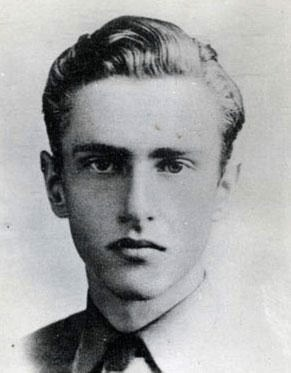
Le Capitaine Philippe Koenigswerther [2] est né en 1918 à Dinard. Il rejoint Londres dès juillet 1940. Il est l’un des tout premiers officiers parachutistes de la 1 ère Compagnie d’Infanterie de l’Air. Il est affecté au BCRA et parachuté près de La Rochelle pour être opérateur radio. Ne trouvant pas son contact, il est récupéré par le SOE et monte un réseau très efficace de sabotage et de renseignement à Bordeaux. Deux fois arrêté en 42 et 43, il s’évade à chaque fois. Il est rappelé à Londres en septembre 1943.
Volontaire pour une dernière mission, il est arrêté peu de temps après. Il est grièvement blessé au cours d’une troisième évasion. Torturé et déporté en Allemagne, il est ensuite exécuté en Alsace au camp du Struthof. Il fut décoré de la Légion d’honneur, la Croix de Guerre et la médaille de la Résistance. Son nom figure aux côtés de celui du Commandant Simon, déjà évoqué, sur la plaque commémorant les étudiants de Sciences-Po morts pour la France.
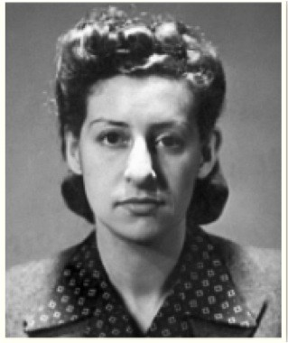
Le Sous-Lieutenant Denise Madeleine Bloch [3] est née à Paris en 1915, fille de Jacques Henri Bloch et de Suzanne Lévi-Strauss.
Dès 1942, elle devient, à Lyon, la secrétaire de Jean-Maxime Aron qui dirige un réseau. Denise Madeleine Bloch travaille en équipe avec celui qu’elle fait passer pour son fiancé, Dominique Mendelsohn. Ils rejoignent tous le réseau du SOE « Detective » à partir de juillet 42. Après l’arrestation du radio anglais et de Aron, elle se cache et change de région.
Elle rejoint le réseau de Georges Starr, chef de « Wheelwright » à Toulouse, puis elle travaille à Agen. Après l’arrestation de deux de ses officiers radio, Pertschuk et Bloom, tous deux juifs, Starr décide d’envoyer Denise à Londres pour porter un rapport très détaillé. Après un voyage très éprouvant, à travers les Pyrénées, puis l’Espagne, elle arrive à Londres. Elle y est tout de suite enrôlée comme FANY (First Aid Nursing Yeomani), unité de couvertures des agents femmes du SOE. Pendant neuf mois, elle va suivre l’entraînement très intense d’agent et d’opérateur radio. C’est à Ringway que, comme tous les hommes, elle sautera et obtiendra sa qualification de parachutiste.
Elle est envoyée en France début mars 44 dans la région de Dourdan en compagnie et comme opérateur radio et agent de liaison de Robert Benoist, un illustre champion de courses automobiles, qui a déjà dirigé plusieurs réseaux.
Grâce aux messages radio de Denise, de nombreux parachutages d’armes sont effectués avec succès. Son réseau organise un maquis et effectue des sabotages. Le 18 juin 44, Benoist est arrêté à Paris. Le lendemain à Sermaise, Denise est arrêtée avec cinq autres membres du groupe. Conduite à la Gestapo avenue Foch, elle y est torturée. Elle est ensuite envoyée à la prison de Fresnes, puis en prison en Allemagne et enfin au camp de concentration pour femmes de Ravensbruck. Fin janvier 45, sur ordre d’Hitler, comme pour tous les agents alliés parachutés, elle et deux autres femmes officiers du SOE, Lillian Rolfe et Violette Szabo, sont abattues d’une balle dans la nuque puis jetées dans un four crématoire.
Denise Bloch fut décorée de la Légion d’honneur, de la Médaille de la Résistance, de la Croix de Guerre et de la Kings Cross.
Son nom est inscrit sur le Mémorial du SOE à Valençay, avec ceux de 104 autres agents de la section française du SOE morts au combat ou assassinés en captivité. Parmi eux, dix étaient juifs.
Douze destins de héros parachutistes juifs de la France libre, douze destins de fils et de filles d’Israël.
Comme vous avez pu le constater, au-delà du parcours de ces douze héros, beaucoup d’autres juifs français et de France rejoignirent ces unités héroïques des parachutistes de la France Libre et des services de renseignement et d’actions.
J’estime la participation des Juifs à ces différentes unités parachutistes à plus de 10 %, là où les Juifs en France représentaient moins de 1 % de la population du pays en 1939.
Au travers de mes différentes lectures, j’estime la participation des Juifs à ces différentes unités parachutistes à plus de 10 %, là où les Juifs en France représentaient moins de 1 % de la population du pays en 1939.
Et pour conclure cette présentation en Israël à l’université de Tel-Aviv, je voudrais tracer un lien indéfectible et originel entre ces parachutistes juifs de la France Libre et les glorieux parachutistes israéliens.
Et ce lien existe, il est tangible, il a un nom, et vous le connaissez déjà, c’est: Norbert Benchemoul.
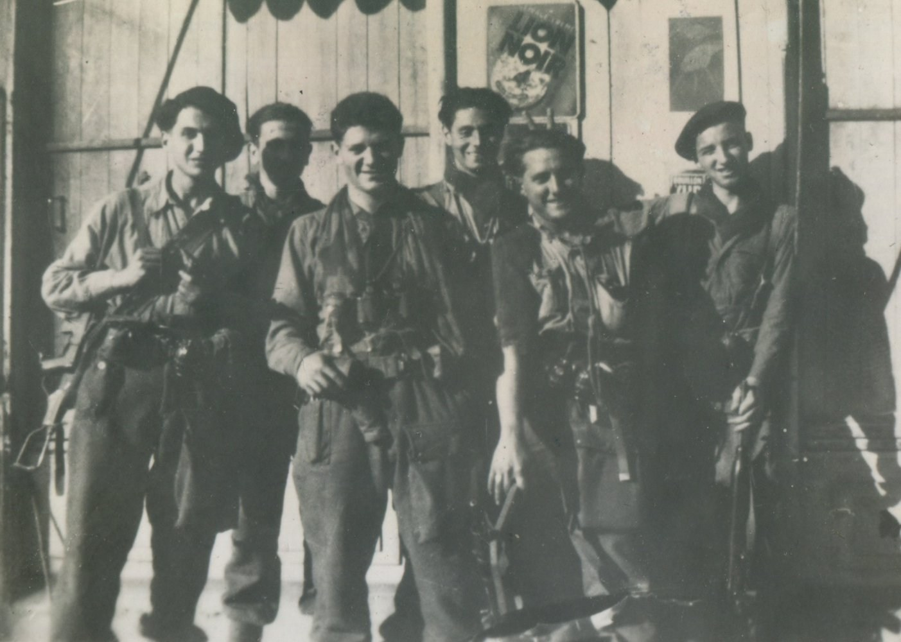
Agé de 20 ans, il prépare activement son concours pour entrer à Polytechnique ou aux Mines. Dès l’année suivante, des envoyés du Yichouv lui demandent d’expertiser des armes achetées en Yougoslavie et transitant par la France. Puis, sous la pression d’un envoyé de la Haganah en avril 1948, bien qu’il serait sûrement admis à l’X ou aux Mines, Norbert accepte de mettre son expérience du combat et des commandos au service de l’Etat juif qui va naître.
Il s’envole vers la Palestine encore sous mandat. Il fera partie de ces volontaires étrangers venus de tous les pays, les MAHAL. Il rencontre Ygal Yadin qui connaît le rôle joué par les SAS pendant la guerre. Celui-ci lui confie la direction d’une des premières unités de reconnaissance de la toute jeune armée d’Israël: le Yechida-Siour qui sera l’ancêtre du Sayeret Matkal. A la tête de ce commando, il dirige des opérations de reconnaissance sur la route de Birmanie, vers Jérusalem assiégée.
Dans le même temps, il organise la création de la première école de formation des parachutistes d’Israël à Ramat David. Il entraîne des jeunes recrues et effectue avec eux les premiers sauts. Les premiers sauts de parachutistes israéliens. En août 48, son unité devient le premier bataillon parachutiste d’Israël. En qualité d’officier des opérations, il dirige avec succès une série d’opérations commandos sur le front nord, grâce notamment au rôle de son officier de renseignement, un ancien des fusiliers marins de la France Libre, Raymond Kwort.
Après la seconde trêve, cette unité parachutiste est renforcée et devient une force de Tsahal. Joël Palgui, qui fut parachuté avec Hanna Senesh, en Hongrie, en prend le commandement, Norbert Beyrard en est le second. Au début 49, il convainc l’état-major de sa doctrine d’armée commando qui a fait ses preuves en France puis en Israël. Il obtient aussi d’Ygal Yadin que tout officier israélien reçoive une formation et un entraînement de para.
En juin 1949, il retourne en France reprendre ses études. Il obtient un master en sciences et un doctorat en économie, il dépose plus de 150 brevets et sera l’un des inventeurs du scanner médical à haute définition. Il est décédé très récemment à Divonne-les-Bains le 13 février 2017, à l’âge de 91 ans.
Les parachutistes juifs de la France Libre ont ainsi joué un rôle déterminant dans la Libération de la France mais aussi dans l’esprit de commando de l’armée d’Israël.
De Gaulle leur rendit ce si juste hommage:
« Ils regardent le ciel sans pâlir et la terre sans rougir ».
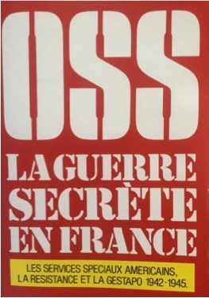
[1] Sources: Le Mémorial de la section F, Gerry Holdsworth Special Forces Charitable Trust, 1992. Michael R. D. Foot, Des Anglais dans la Résistance. Le Service Secret Britannique d’Action (SOE) en France 1940-1944. Jean-Louis Crémieux- Brilhac, Tallandier, 2008.
[2] Sources: Dictionnaire des fusillés et exécutés par condamnation et comme otages (1940-1944).
Revue de la France Libre, numéro spécial, Parachutistes SAS de la France Libre, juin 1953.
[3] Sources: Martin Sugarman, Daughters of Yael, Two Jewish Heroines of the SOE.
Le Mémorial de la section F, Gerry Holdsworth Special Forces Charitable Trust, 1992.
Michael R. D. Foot, Des Anglais dans la Résistance. Le Service Secret Britannique d’Action (SOE) en France 1940-1944. Jean-Louis Crémieux-Brilhac, Tallandier, 2008.